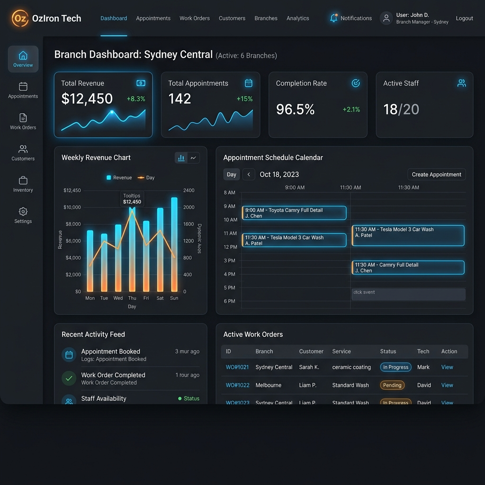
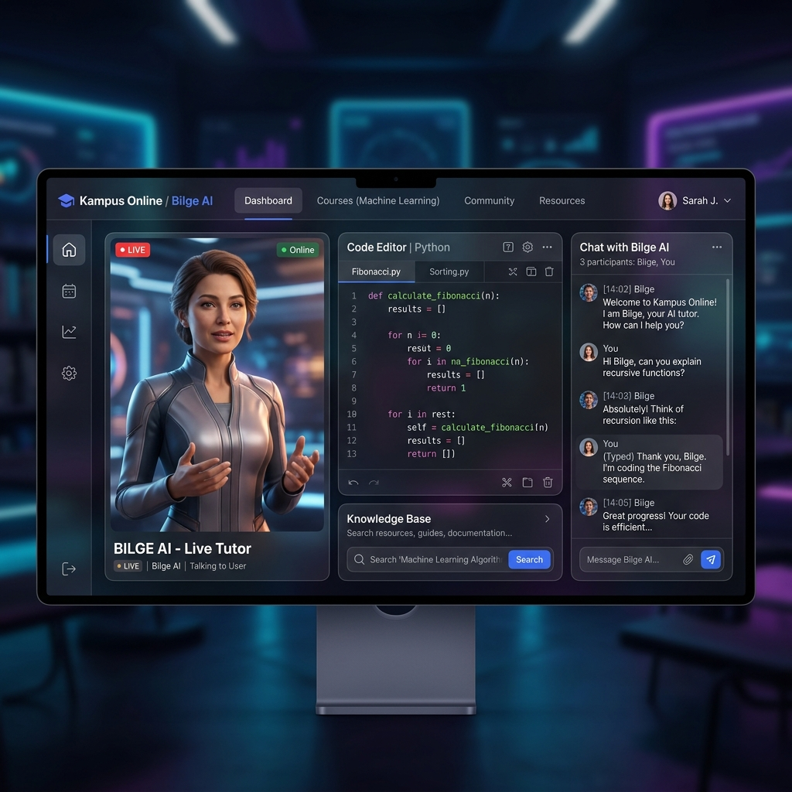

Karmaşık iş süreçlerini, temiz kod mimarisi ve modern teknolojilerle ölçeklenebilir dijital çözümlere dönüştürüyorum. Güçlü backend sistemleri ve yenilikçi SaaS platformları inşa ediyorum.
Merhaba! Ben Özdemir Kaya. Donanım ve yazılım dünyalarının kesişiminde çözümler üreten bir yazılım geliştiriciyim. Çukurova Üniversitesi Elektronik Teknolojisi mezuniyetimin getirdiği donanım bilgisini, şu an eğitimime devam ettiğim İstanbul Üniversitesi Bilgisayar Programcılığı altyapısıyla birleştirerek güçlü, optimize edilmiş ve ölçeklenebilir yazılım mimarileri geliştiriyorum.
Profesyonel geçmişimdeki perakende satış tecrübelerimle, müşteri beklentilerini, sahadaki operasyonel dinamikleri ve bölgesel satış süreçlerini yakından analiz etme fırsatı buldum. Sahadan gelen geri bildirimleri değerlendirip satış verilerini anlamlandırma konusundaki bu pratiğim; bugün bir yazılım geliştirici olarak inşa ettiğim SaaS platformlarında işletmelerin gerçek ihtiyaçlarına doğrudan yanıt veren, analitik ve kullanıcı odaklı mimariler kurmamı sağlıyor.
Gelecek vizyonum; edindiğim bu kurumsal süreç deneyimini ve modern backend teknolojilerindeki uzmanlığımı bir araya getirerek, global çapta uzaktan (remote) hizmet veren, yenilikçi ve yüksek katma değerli çözümler üreten kendi yazılım şirketimi kurmaktır.

Araç yıkama, detailing, boya-kaporta, seramik kaplama, motosiklet hizmetleri ve diğer otomotiv işletmeleri için geliştirilen merkezi yönetim platformu. Müşteri yönetimi, randevu planlama, iş emri takibi, ödeme süreçleri ve operasyon yönetimini tek çatı altında sunar. Gelişmiş yetkilendirme (RBAC), kapsamlı raporlama araçları ve detaylı denetim kayıtları (audit logs) sayesinde işletmelerin veriye dayalı kararlar almasını, performanslarını ölçmesini ve operasyonlarını ölçeklenebilir şekilde yönetmesini sağlar.

Öğrencilere kişiselleştirilmiş ve interaktif bir ders çalışma deneyimi sunan yeni nesil eğitim portalı. Streaming Avatar API entegrasyonu ile gerçek zamanlı konuşan ve ders materyallerine göre özel olarak eğitilmiş, büyük dil modelleriyle (LLM) güçlendirilmiş dijital asistan karakter (Bilge) modülü barındırır.